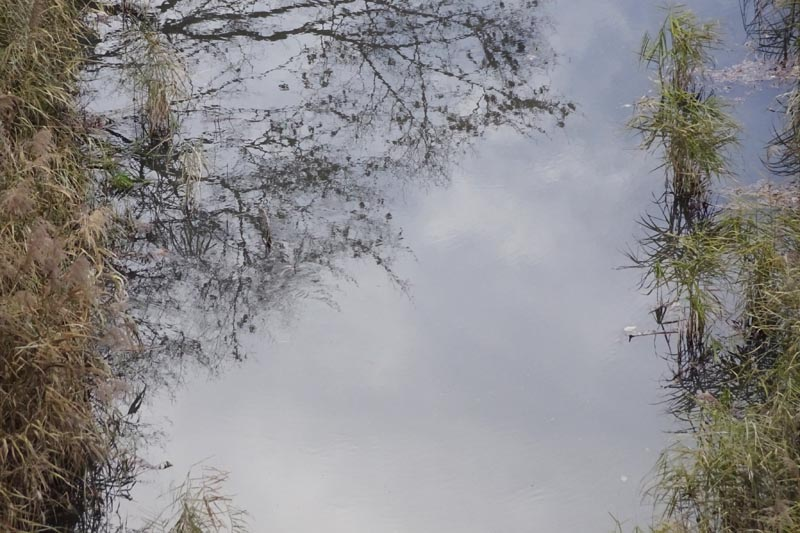

ヴォーン゠ウィリアムズ: ピアノ五重奏曲
作曲者の死後久しく未出版だった初期の室内楽のひとつ、そのためあまり認知度の高くない『ピアノ五重奏曲』（30歳頃の作品）だが、それでもさすがに人気作曲家だけあって数種類の録音が見つかる。3種類ほど聴いてみたが、どれも悪くない。下はその中でも特にめりはりのきいた好みの演奏であった。録音も良い。
Ralph Vaughan Williams: Piano Quintet
in C Minor
Mark Bebbington (pf)
Duncan Riddell (vn)
Abigail Fenna (va)
Richard Harwood (vc)
Benjamin Cunningham (cb)
(2022)
シューベルトの『ます』と同じく、コントラバスが入って低音が増強される編成を使っている。ピアノ独奏がときどき一人歩きしているようになる曲ではあるが、ヴォーン゠ウィリアムズの個性は全曲を通じて十分楽しめる。第2楽章のコラール風の主題は静謐でとても美しい。この楽章で断片が現れる終楽章（変奏曲風幻想曲）テーマは、後のヴァイオリン・ソナタと同じもの。この第3楽章後半は、下降音階をベースとしたかなり息の長いクライマックスを築く構成になっていて、ちょっとドイツ後期ロマン派の交響曲を思わせる。Andante をスタートにして、"animando poco a poco" の指示箇所からクライマックスの fff に至るまで、徐々にテンポを上げていくことになるのだが、その頂点では四分音符=178とかなり速いテンポ指定になっていて、あまり悠長にアチェランドしているとそのテンポに到達できないためか、どの演奏もややせかせかと前のめりに進む感じになってしまっている（この演奏は比較的自然な感じだが）。もちろんそれが曲に忠実なのだろうけれども、もう少しだけゆったりと雄大に持って行く手もあるのではとも思ってしまう。もっとも小編成でそれが効果的に響くかどうかはわからないが。
このアルバムは選曲がよく考えられていて、他にヴァイオリンとヴィオラの2曲のロマンス（前者は即ち『あげひばり』）に加えて、ピアノ・管弦楽・合唱のための『詩篇歌「Old 104th」による幻想曲』まで入っている。弦はそのオーケストラ（RPO）のメンバーが担当している模様（ヴァイオリンのダンカン・リデルはN響の客演コンマスで見たことがある）。だが強いて言うとピアノが主体のアルバムらしく、全曲ピアノが活躍する。『ピアノ五重奏曲』ではピアノが艶のある強靭な打鍵により一層激しい曲想をえぐり出している部分もあって魅力的。ちなみに、オーケストラが参加したアルバムであるにも関わらず『あげひばり』をピアノ伴奏版で演奏している所はこだわりなのだろうか。オーケストラの湧き上がって包み込むような音響はピアノだけでは出せないけれども、親密かつシンプルな良さがある。また、細部まで見通しが利くので、その点でもありがたい演奏である。

(Feb. 10, 2024)